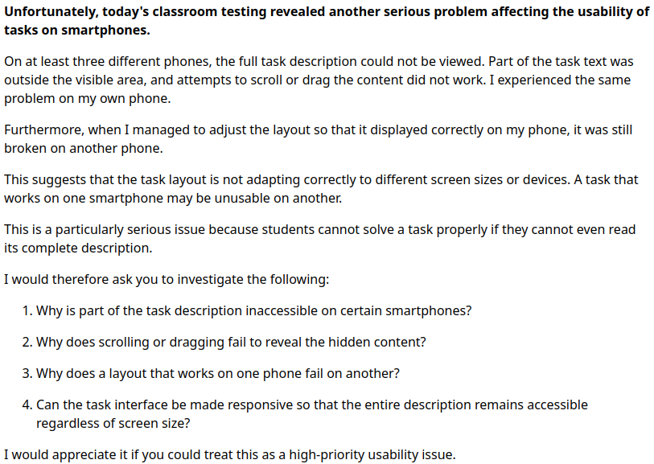

MathCityMap: ülesande tekst ei mahtunud telefoni ega liikunud
Klassis rada läbi mängides selgus vähemalt kolmes telefonis, et ülesande püstitust ei saanud täielikult lugeda: osa tekstist jäi nähtavast alast välja. Sisu kerimise või lohistamise katse ei toonud peidetud osa nähtavale. Sama juhtus ka õpetaja enda telefonis.
Proovitud sammud ja tulemused
- Ülesanne avati eri telefonides. Vähemalt kolmes jäi osa püstitusest nähtamatuks.
- Teksti prooviti kerida või lohistada. Puuduv sisu ei tulnud nähtavale.
- Ülesande kujundust kohandati nii, et see sobis õpetaja telefonile. Teises telefonis oli sama ülesanne endiselt katki. Täpseid kujundusmuudatusi algvestlus ei kirjelda, mistõttu pole sellest kinnitatud üldist töövõtet.
Toe tagasiside. MathCityMapi meeskond teatas samal päeval, et enamik portaali ja serveri probleeme on parandatud ning mobiilirakenduse vead on veel töös. Vastus ei sisaldanud parandatud vigade loendit ega vastavaid versioone. See ei kinnitanud konkreetse telefonivaate parandamist.
Raporteerimine. Kell 16.14 saadetud vastuses paluti täpsustada parandatud vigu, väljalaskeversioone ja kasutusse jõudmise aega ning kirjeldati uut mitme telefoni kuvamisprobleemi.

Seis päeva lõpus: lahendamata. Ühe telefoni järgi kohandamine ei andnud teiste telefonide jaoks toimivat lahendust. Telefonimudelid, rakenduse versioonid ja täpne kujundusmuudatus ei olnud selles allikas kirjas; vea põhjust ei saa nende andmeteta kinnitada.